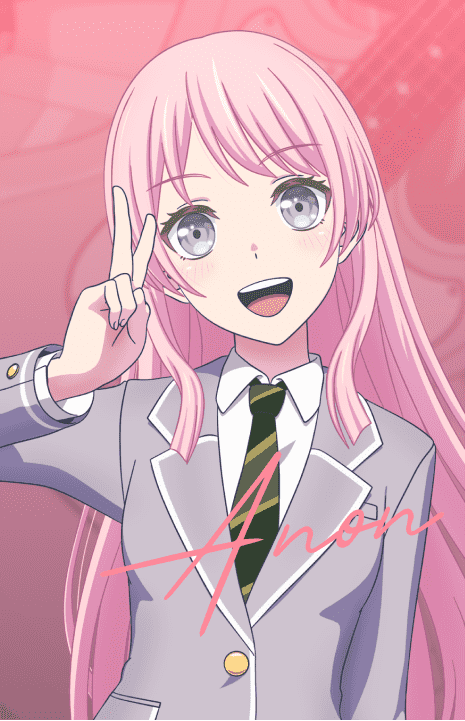
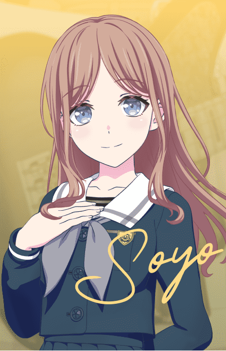
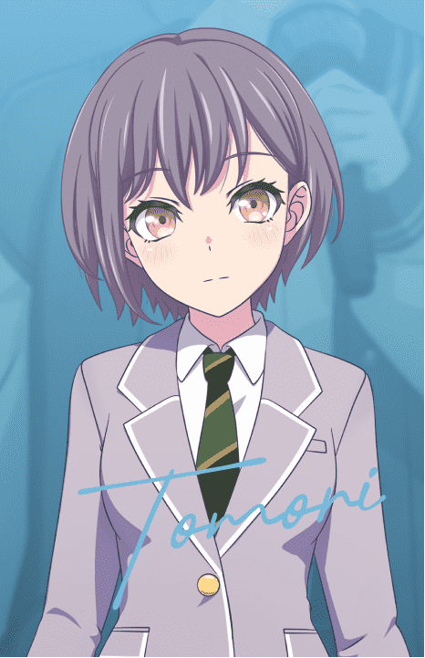
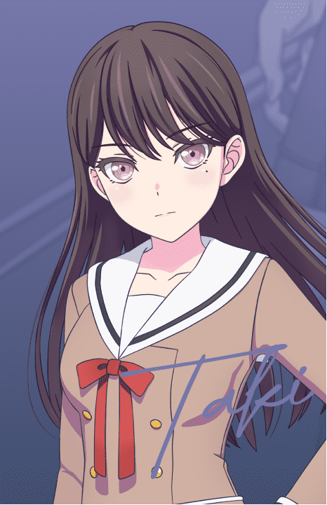
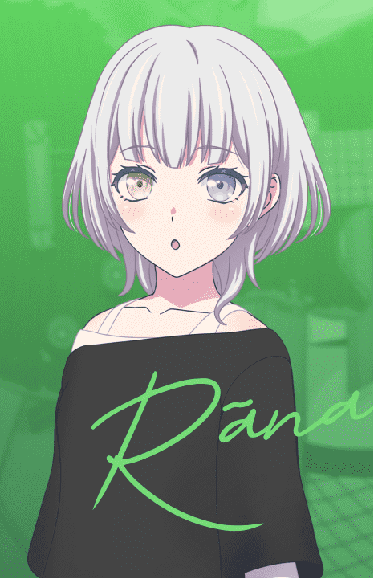

千早 愛音Gt.
千早 愛音 Gt.
Anon Chihaya
CV.立石凛
- 羽丘女子学园的高中一年级学生。成绩优异，具备出色的社交能力和行动力。在中学时代是班级的人气者，还担任学生会主席。爱慕虚荣，喜欢追赶潮流。
- 昵称是爱音或者爱音酱。为爽世取了昵称"Soyorin"，为立希取了昵称"Rikki" Soyo桑Love~
- 即使为了Live而进行的练习都很辛苦，爱音还是很努力去克服困难。
- 觉得立希很唠叨。
- 姓氏「千早」来自东京都丰岛区千早町。
- 「点击观看官方介绍视频」

長崎 そよBa.
長崎 そよ Ba.
Soyo Nagasaki
CV.小日向美香
- 月ノ森女子学园的高中一年级学生。在吹奏乐部负责演奏低音提琴。总是散发着温和气息的‘姐姐系’存在，对谁都温柔体贴，经常被周围人依赖。有边思考边不自觉摆弄手指的习惯。
- 和才刚刚开始组乐队还没多久的大家一起快乐的努力着。
- 对于被灯说自己很温柔而感到很高兴。
- 虽然是姐姐系，但很腹黑（）
- 姓氏「长崎」来自东京都丰岛区长崎町。
- 「点击观看官方介绍视频」

高松 燈Vo.
高松 燈 Vo.
Tomori Takamatsu
CV.羊宮妃那
- 羽丘女子学园的高中一年级学生。对事物的感受方式与他人不同，是「羽丘的奇妙少女」。喜欢收集喜欢的物品，经常捡拾路上的石头和树叶。
- 虽然自认不是那么擅长唱歌，但仍会努力去唱。
- 由灯写在笔记本上作词，之后立希负责作曲。
- 对成员的评价：乐奈有实力，爽世待人温柔，爱音正一同努力着。 立希：那我呢？
- 容易感到寂寞，常感受着孤独。
- 姓氏「高松」来自东京都丰岛区高松町。
- 「点击观看官方介绍视频」

椎名 立希Dr.
椎名 立希 Dr.
Soyo Nagasaki
CV.林鼓子
- 花咲川女子学园的高中一年级学生。喜欢独处的独行侠。在LiveHouse 「RiNG」担任兼职工作人员，但不太擅长接待客人。对灯心软。有一个年长自己四岁的姐姐。
- 负责作曲，在拿到灯的歌词以后，创作出切合她世界观的歌曲。
- 觉得灯的歌声很好听，歌词也很不错，LIVE也真的很棒。却不肯承认这一点。 偷摸零狂热症晚期患者
- 姓氏「椎名」来自东京都丰岛区椎名地区（旧椎名町，在今南长崎町和目白町）。
- 「点击观看官方介绍视频」

要 楽奈Gt.
要 楽奈 Gt.
Rāna Kaname
CV.青木陽菜
- 花咲川女子学园的中学三年级学生。"不定时刷新"在LiveHouse『RiNG』的特立独行少女。吉他实力相当了得，对喜欢的事物非常钟爱，讨厌的事物则坚决排斥，爱憎鲜明。喜欢抹茶。
- 因为觉得很有趣所以就加入了乐队。
- 对猫很有兴趣。 おもしれー女～～
- 姓氏「要」来自东京都丰岛区要町。
- 「点击观看官方介绍视频」